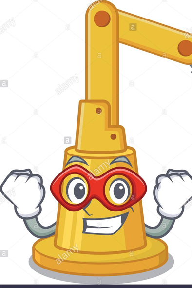

Conceptos destacados de la AUTOMATIZACIÓN
Automatismo: Sistema que permite ejecutar una o varias acciones sin intervención manual.
Automatización: Aplicación de sistemas automáticos en la realización de un proceso.
Acciones: Actuación sobre el medio o proceso, con frecuencia son operaciones que se pueden repetir indefinidamente. Suelen ser acciones humanas susceptibles de ser sustituidas por acciones mecánica realizadas por los órganos de trabajo.
Fuentes de Energía: Las operaciones y movimientos de los sistemas automáticos suponen un gasto energético que ha de ser aportado por un medio externo. Suele denominarse fuente de potencia a aquélla que suministra energía a los órganos de trabajo que actúan sobre el proceso. Las funciones propias del sistema automático también necesitan de un soporte energético.
Órganos de Mando/Control: Representa el sistema que decide cuando realizar las acciones, que acciones realizar, y en su caso, el valor que han de tener algunos de los parámetros que definen una acción o tarea.
Órganos Sensoriales: Son sistemas cuya misión consiste en captar o medir determinados valores o magnitudes durante la realización del proceso. Estos órganos proporcionan información a los órganos de mando para que estos puedan dividir consecuentemente.
Procesos por Lotes: Son procesos discretos en los que intervienen más de un elemento o pieza inicial para ser transformados en un solo producto.
Regulación Automática: Mecanismos que permiten actuar durante un proceso continuo con el fin de que las magnitudes alcance un valor determinado. Cuando este valor se mantiene constante en el tiempo se dice que se está ante un problema de regulación. Cuando este valor varia en el tiempo se dice que se está ante un problema de servomecanismo.
Control en Bucle Abierto: Los órganos de mando o control actúan sobre el proceso de acuerdo a unos objetivos previamente establecidos. No existe transmisión de información desde el proceso a los órganos de mando.